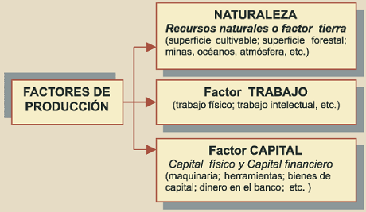

Teoria del productor
Basicamente esta teoria analiza la conducta de las empresas y su forma de toma de decisiones sobre que, como y cuanto producir de la manera mas eficiente posible, es decir, tratando a la par de maximizar sus beneficios y minimizar sus costos en todo momento. A continuacion se mostraran algunos factores:
